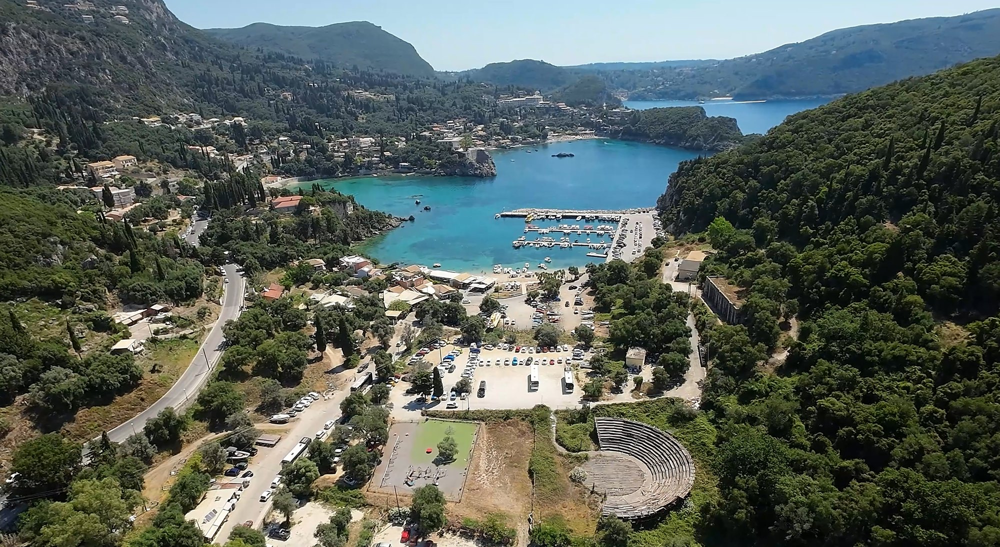
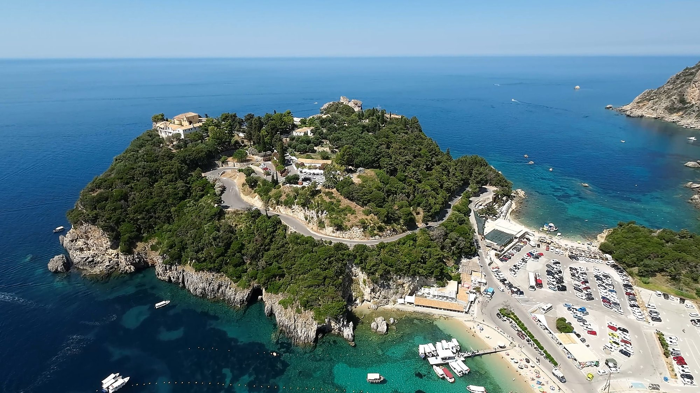
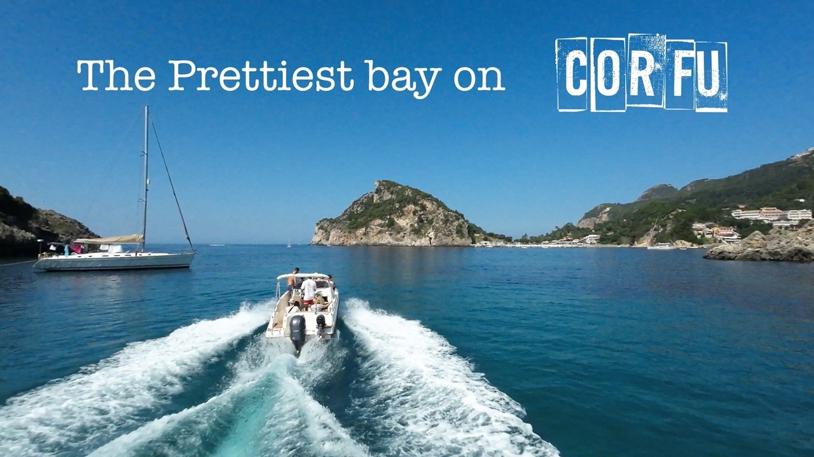
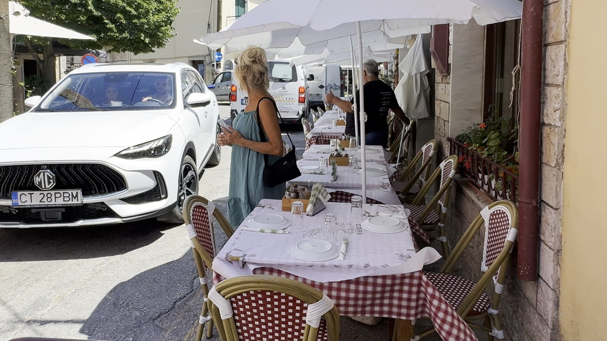
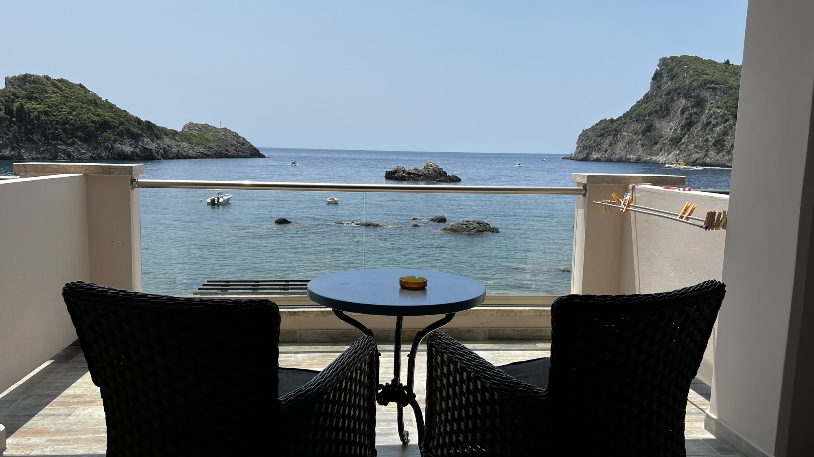
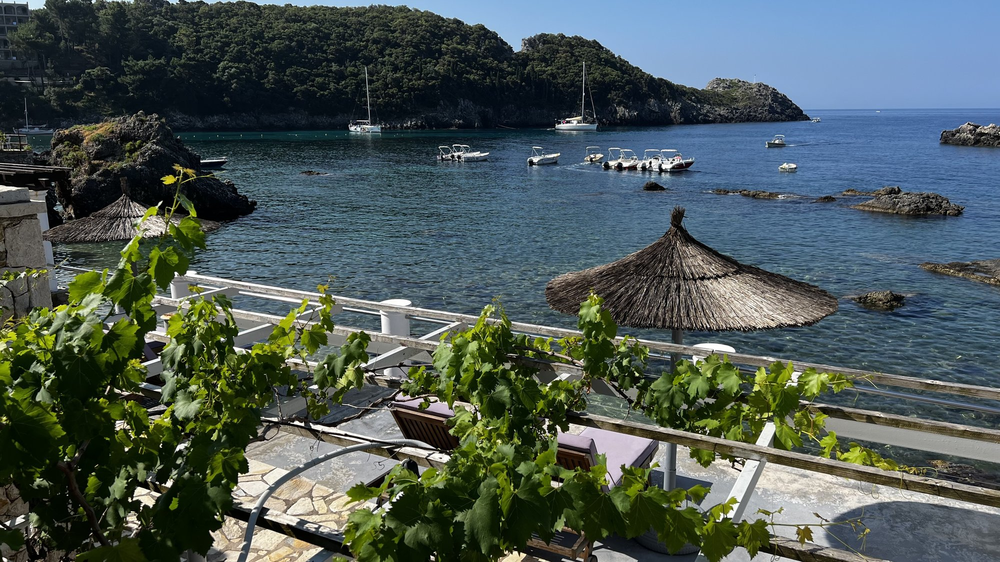
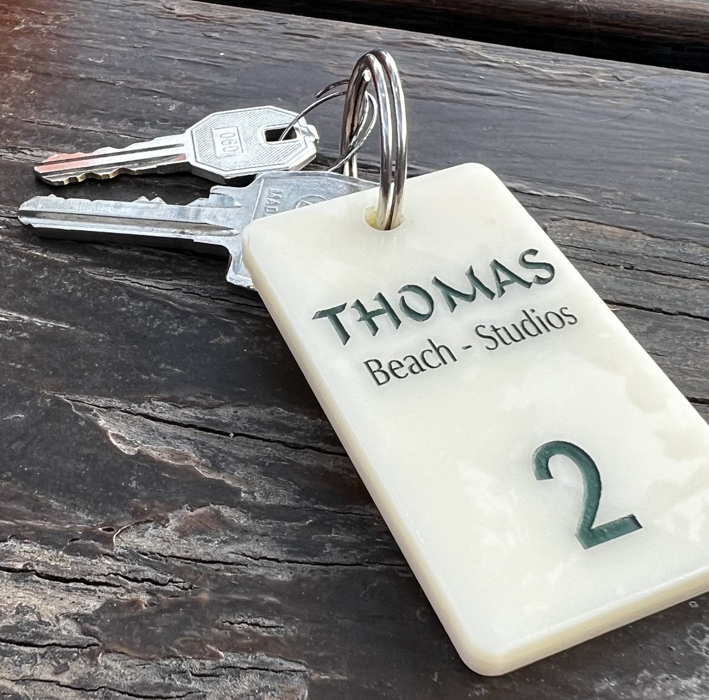

There are some places in Greece that make you stop, take a photograph and wonder whether the sea really is that colour. Paleokastritsa is definitely one of them. Tucked away on the northwest coast of Corfu, this beautiful stretch of coastline is famous for its spectacular bays, emerald-green hillsides and impossibly clear turquoise water.
It's one of Corfu's best-known destinations, and it's not difficult to understand why. Little beaches nestle between rocky headlands, boats bob about in sheltered bays and there are enough tavernas and beach bars to keep even the most enthusiastic holidaymaker happy.
But there's a catch. When somewhere is this beautiful, everybody else wants to visit too. And Paleokastritsa certainly knows how to attract a crowd.
We found plenty to love, including some wonderful places to eat, a rather lovely place to stay and one of the best traditional Greek meals of our trip. There was also a slightly alarming roadside dining experience in a nearby village, but more about that later!
GETTING TO PALEOKASTRITSA
Paleokastritsa is approximately 23 kilometres from Corfu Town and Corfu International Airport, making it an easy drive of around 30–40 minutes, depending on traffic.
It's also well positioned for exploring the island, with Sidari around 33 kilometres away and Kassiopi approximately 40 kilometres to the east.
The drive itself is worth mentioning. The scenery becomes increasingly impressive as you approach the coastline, with winding roads, lush green hills and glimpses of those beautiful bays appearing between the trees.
Parking, however, can be a little more challenging. There is a large paid car park opposite Agios Spiridon Beach, but you'll also find cars squeezed into spaces along the main road and further up the hillside. Some roadside parking is free, although finding a space in the summer months can become something of a competitive sport.
If you're staying locally, having somewhere with allocated parking is definitely a bonus.
THE BEACHES – A LITTLE SLICE OF PARADISE

The coastline around Paleokastritsa is quite simply stunning. Rather than one long sandy beach, you'll find a collection of small bays and coves, each with its own character.
The water is wonderfully clear, ranging from pale turquoise in the shallows to deep blue further out. Backed by steep, green hillsides, it's the sort of scenery that makes you want to abandon whatever plans you had for the day and head straight for the water.
Here are some of the beaches worth exploring:
Agios Spiridon Beach
This is the main beach and probably the most recognisable in Paleokastritsa. Situated right beside the main road, it's a beautiful sheltered bay surrounded by green hills. It's particularly popular because of its convenient location, but that also means it gets extremely busy.
Agios Petros Beach and Ampelaki Beach
Just west of the main beach, these two smaller bays offer more opportunities to enjoy the beautiful water. Both are popular for swimming and are surrounded by the dramatic rocky coastline.
Alipa Beach
Located beside the small harbour, Alipa is a lovely spot to watch the boats coming and going. It's also a convenient starting point for boat trips around the coastline.
Platakia and Veredosa Beaches
These are two much smaller beaches on the northern side of the bay. They're worth looking out for if you fancy exploring some of the quieter corners.
Agia Triada Beach
Situated on the eastern side of the bay, this is another popular beach and a good alternative to the main stretch of sand.
Rovinia Beach and the Liapades coastline
If you fancy escaping some of the crowds, head towards neighbouring Liapades Bay. There are several beautiful beaches here, including Rovinia, which is particularly famous for its spectacular setting and clear water.
Limni and Klimatia are two more secluded coves, generally reached on foot or by boat.
These beaches are well worth exploring, although some involve a walk over uneven terrain, so sensible footwear is advisable.
THINGS TO SEE AND DO
Although most people come here for the beaches, there's more to Paleokastritsa than sunbathing and swimming.
Visit the Monastery of Paleokastritsa

Perched high above the coastline, the Monastery of the Virgin Mary is one of the area's most important historic attractions and an absolute must-visit. The monastery dates back to 1225, although the buildings you see today have been developed and restored over the centuries.
Inside, you'll find a beautiful church decorated with religious paintings and traditional details, along with a small museum displaying religious artefacts and historical items, but it's the views that really make the visit special.
The monastery overlooks the spectacular coastline, and there are several viewpoints where you can admire the bays and surrounding green hills.
It's worth remembering that this is an active religious site, so modest clothing is expected.
Take a Boat Trip

One of the best ways to appreciate the coastline is from the water.
Boat trips operate from the harbour, taking visitors around the numerous coves, caves and hidden beaches that are difficult to reach by road.
Some excursions include visits to the famous Blue Eye Cave and other sea caves along the coastline, with opportunities to stop for a swim in those wonderfully clear waters.
You can also hire a small boat yourself, depending on the operator and conditions. This gives you the freedom to explore at your own pace and discover some of the more secluded swimming spots.
If you're visiting in summer, I'd definitely put a boat trip on the list.
Explore the Village
Paleokastritsa isn't really one traditional village with a central square. It's more of a collection of small settlements and tourist areas spread along the coastline and main road.
Take a wander, browse the shops, stop for a coffee or find a shady spot overlooking the sea. It's a lovely place to spend a few hours, particularly outside the busiest summer weeks.
WHERE TO EAT – TRADITIONAL GREEK FOOD AND LOVELY TAVERNAS
There are plenty of places to eat in Paleokastritsa, from casual beach bars and coffee shops to traditional Greek tavernas overlooking the water.
We were particularly fortunate with our accommodation, as right next door to Thomas Beach Studios was Maria's Restaurant, a wonderful family-run traditional Greek taverna.
Owned by the same family as the studios, it was tucked away down a flight of steps, with a beautiful tree-lined outdoor dining area.
It had a lovely atmosphere, the sort of place where you could happily settle in for a leisurely Greek meal without feeling the need to rush anywhere. The food was superb, traditional Greek cooking, generous portions and very reasonably priced. It quickly became one of our favourite places to eat.
Another restaurant worth seeking out is Dolphin Taverna. With tables overlooking the sea, gorgeous food and wonderfully friendly staff, it's a lovely setting for a meal. It's also extremely popular, particularly during the summer, so booking ahead is definitely advisable if you have your heart set on eating there. And talking of food, there's another restaurant just a short drive away that deserves a special mention.
A LITTLE DETOUR TO DOUKADES – AND POSSIBLY THE BEST STIFADO IN GREECE!
Just a short drive inland from Paleokastritsa is the traditional village of Doukades. It's a lovely little place to explore, but our main reason for visiting was a family-owned restaurant called Elizabeth's Taverna.
Now, Elizabeth's Taverna is not necessarily somewhere you'd choose for a peaceful meal away from traffic. The tables are perched right beside the roadside, where Greek drivers appear to approach every corner as if they're competing in the Monte Carlo Rally.

I suggested Jacquie take a roadside seat so she could enjoy the full Greek village experience. Well, that's what I told her. She wasn't entirely convinced. In fact, she pointed out that if she was going to be taken out by a passing Fiat, at least her last meal would have to be a good one.
Fortunately, the food didn't disappoint. We started with the butter beans, cooked in Grandma's rich tomato sauce. They were quite possibly the best butter beans we'd eaten anywhere in Greece. Simple, traditional Greek cooking at its absolute best.
Then came the star of the show: the stifado. A rich, slow-cooked beef stew, packed with flavour and served in a portion large enough to feed an entire rugby team. It was absolutely delicious.
Elizabeth's Taverna is one of those places that reminds you why travelling around Greece is about so much more than visiting the famous sights. Sometimes the best discoveries are tucked away in a little village, with a table beside a busy road and a plate of food you'll remember long after you've left.
SHOPPING IN PALEOKASTRITSA
Paleokastritsa has plenty of shops catering for holidaymakers, although you won't find one central shopping street.
Instead, shops are scattered along the main road and surrounding areas.
You'll find supermarkets, bakeries, kiosks, souvenir shops and places selling all the usual holiday essentials. Whether you need a bottle of water, something for breakfast, a beach towel or a slightly unnecessary souvenir to squeeze into your suitcase, you'll find it here.
It's not really a destination for serious shopping, but there's enough to keep you supplied during your stay.
WHERE WE STAYED – THOMAS BEACH STUDIOS
We stayed at Thomas Beach Studios, tucked away at the top of the hill in a beautiful location overlooking the sea. The studios are modern and comfortable, with a kitchenette and balcony, and are positioned right by the beachfront. Step outside onto your balcony and you're greeted by those gorgeous sea views.


There is also a lovely garden area where you can relax, enjoy a barbecue or simply sit and take in the surroundings.
One particularly useful bonus is the allocated parking space. Parking in Paleokastritsa can be tricky, especially during the summer, so having somewhere guaranteed to leave the car is a real advantage.

The studios are around a ten-minute walk from the main beach and local tavernas, making it easy to get around without constantly jumping in the car. It's a beautiful location and somewhere we'd happily recommend.
These studios are very popular and book up regularly, so if you're interested, I'd suggest reserving well in advance.
OUR VERDICT – WOULD WE RETURN TO PALEOKASTRITSA?
There's no denying that Paleokastritsa is one of the most beautiful parts of Corfu. The coastline is spectacular, the beaches are gorgeous, the water is wonderfully clear and there are plenty of opportunities to explore by boat, visit historic sites and enjoy some excellent Greek food.
We loved our stay at Thomas Beach Studios, enjoyed some fantastic meals at Maria's and Dolphin Taverna, and the trip to Doukades for Elizabeth's stifado was a definite highlight, but Paleokastritsa is also a victim of its own success.
It's famous for a reason, and during the peak summer months, the beaches can become packed, parking is difficult and the restaurants you really want to visit can be busy enough to require advance reservations.
Outside the main summer season, however, it retains much of its charm. There's more room to enjoy the scenery, the beaches become a little more peaceful and you can appreciate what makes this corner of Corfu so special.
Would we go again? Absolutely. But probably not in the busiest summer months. If you love beautiful beaches, turquoise water, boat trips and traditional Greek food, Paleokastritsa deserves a place on your Corfu itinerary.
Just remember to leave room for a trip to Doukades. And if Jacquie asks you to choose a roadside table, perhaps check the traffic first!